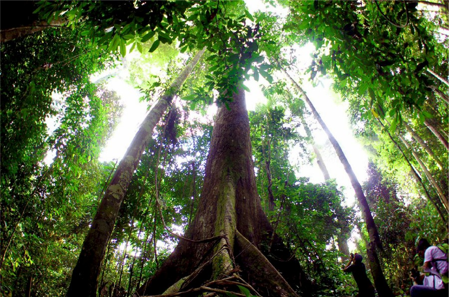
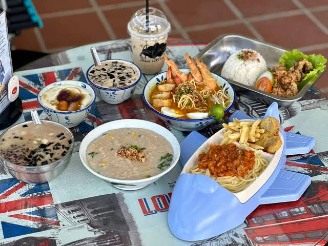

Nature & Rainforest
Tawau is close to beautiful rainforest landscapes, including Tawau Hills Park, a destination for nature lovers.
A vibrant town on the southeastern coast of Sabah, Malaysia, known for its nature, food and welcoming communities.

Tawau is close to beautiful rainforest landscapes, including Tawau Hills Park, a destination for nature lovers.

Sabah offers diverse natural scenery, from green landscapes to coastal views. These are some of the things I appreciate about home.

One of my favorite things about Tawau is its variety of food and the influence of different local cultures.
Photo note: These are illustrative stock photos, not verified photographs of Tawau. Replace them with your own Tawau images before submission.
Explore my interests